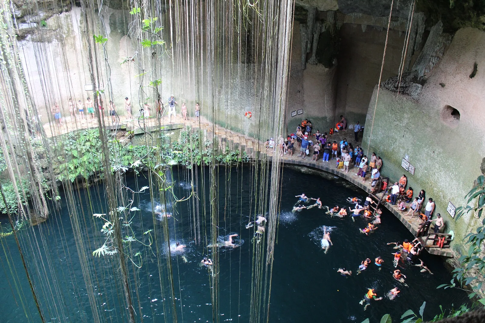

Riviera Maya · Quintana Roo
A trip planner for the open swims, snorkel caverns, and dive sites that ring Cancún, Playa, Akumal, and Tulum. Filter by what you want to do, sort by distance from where you’re staying, and trust the current price & hours.
Loading…
Plan the day
Cenote Map is a free, independent planner built by Akumal locals. Booking with our partner businesses keeps it online and ad-free.
Report conditions